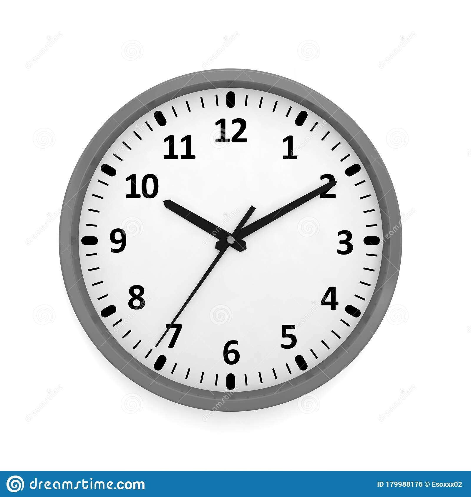
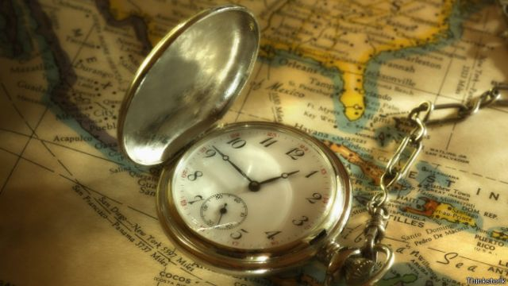
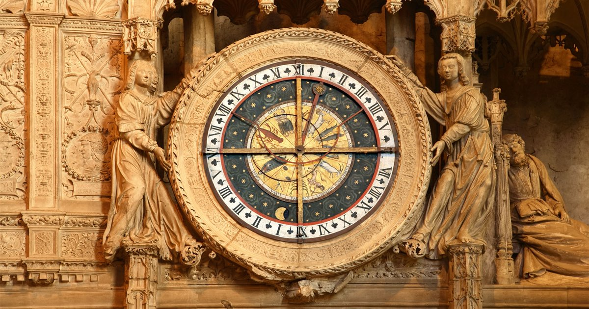
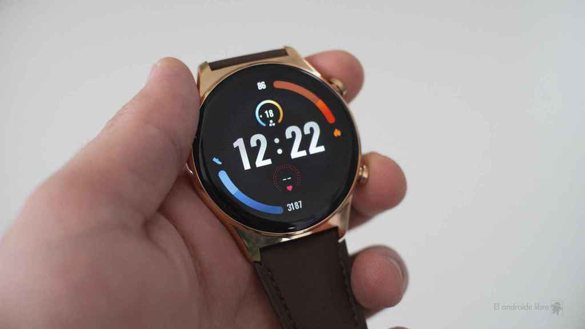
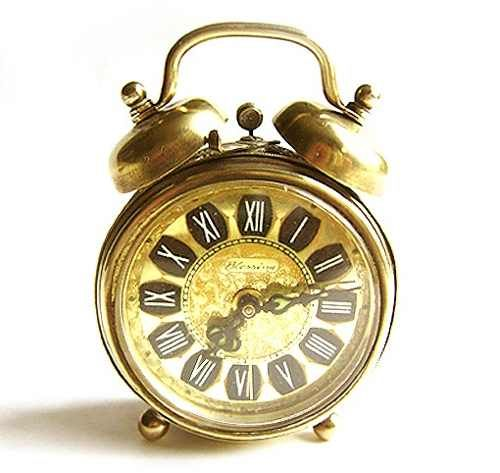
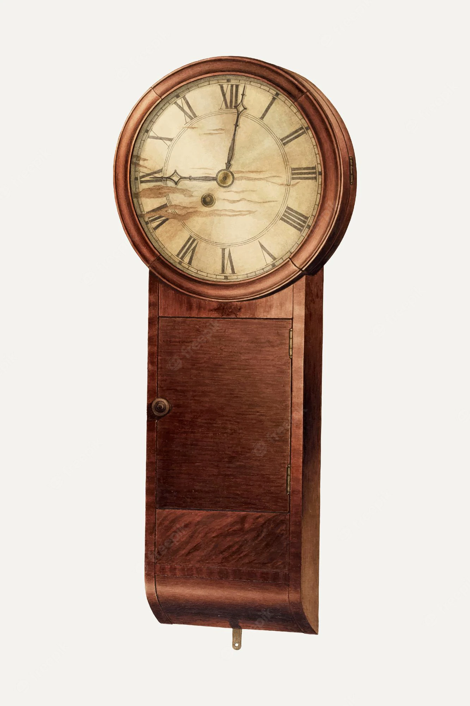
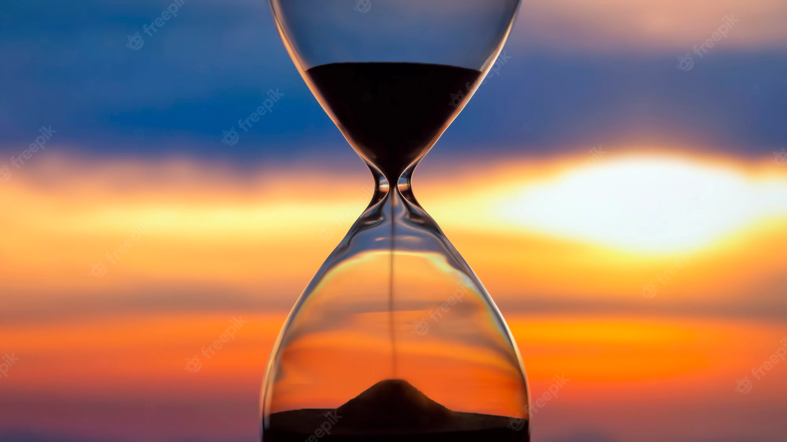
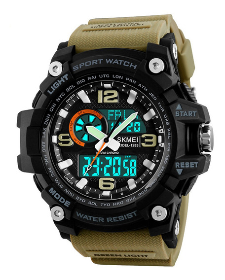

En la antigüedad se conocieron varias especies de relojes. Vitruvio habla del reloj de agua o clepsidra, el de aire, el de sol y de otras especies que son desconocidas.
Los egipcios medían con el gnomon los movimientos del Sol. De igual medio se valía el ilustre astrónomo para sus observaciones. Las clepsidras y los relojes de sol fueron inventados en Egipto en tiempos de los Ptolomeos; las clepsidras fueron después perfeccionadas por Escipión Nasica o según otros por Ctesibio (discípulo de los oradores romanos medían con ellas la duración de sus discursos.)
Se cree que los grandes relojes de pesas y ruedas fueron inventados en Occidente por el monje benedictino Gerberto (papa, con el nombre de Silvestre II, hacia finales del siglo x) aunque ya con alguna anterioridad se conocían en el Imperio bizantino. Dante, en La divina comedia, canto X de El paraíso, antes del año 1321dc, cuenta acerca de relojes mecánicos con función alarma, "cuyas ruedas se mueven unas a otras, y apresuran a la que va delante hasta que se oye tin tin con notas tan dulces", como algo normal.
Según otras fuentes, el primer reloj de que habla la historia construido sobre principios de mecánica es el de Richard de Wallingford, abad de San Albano, que vivió en Inglaterra hacia 1326, pues al parecer la invención de Gerberto (después Silvestre II) no era más que un reloj de sol. El segundo es el que Santiago Dondis mandó construir en Padua hacia 1344 y en el cual según refieren se veía el curso del sol y de los planetas. El tercero fue el que había en el Louvre de París, mandado traer de Alemania por el rey Carlos V de Francia. El antepasado directo de estos instrumentos podría ser el complejo mecanismo de Anticitera, datado entre 150 a. C. y 100 a. C.
El primero que imaginó construir relojes de bolsillo fue Pedro Bell de Núremberg; su aspecto les valió el nombre de «huevos de Núremberg». En 1647, Christiaan Huygens aplicó a los relojes de torre o de pared el péndulo, cuyo descubrimiento se debe a Galileo. El mismo físico aplicó en 1665 el muelle de espiral a los relojes de bolsillo. En 1647, el ginebrino Gruet, residente en Londres, aplicó al reloj la cadenilla de acero que sirve para transmitir el movimiento del tambor al cono, sustituyendo a las cuerdas de vihuela empleadas hasta entonces. Dos años después se inventaron los relojes de repetición.
Visor de Relojes








Hay una gran variedad de tipos diferentes de relojes. Actualmente los relojes personales son en su mayoría mecánicos y electrónicos, ya sean analógicos o digitales, funcionan con una pequeña pila eléctrica que mediante impulsos hace girar las agujas (relojes analógicos) o marca los números (relojes digitales).
Existen gran cantidad de relojes mecánicos para uso personal (de pulsera o de bolsillo) o general (relojes de pared y antesala). Los relojes mecánicos se estiman y valoran más que los electrónicos a pesar de su menor exactitud y mayor precio; ya que son considerados por los expertos como obras de arte mecánicas.
Hoy en día existen una gran cantidad de compañías relojeras, fabricantes de relojes mecánicos, tanto personales como fijos, países como Alemania, Suiza, Japón, China, Reino Unido, Estados Unidos y Rusia, albergan importantes compañías del sector. En el formato analógico existe una escala fija y dos agujas que giran a velocidad constante; la aguja más corta y ancha indica las horas, y tarda doce horas en completar una vuelta completa, la aguja más delgada y larga, el minutero, indica los minutos y tarda una hora en completar una vuelta completa a la esfera del reloj. Puede existir una tercera aguja en el mismo eje o con un eje distinto que señala los segundos y tarda un minuto en dar una vuelta completa.